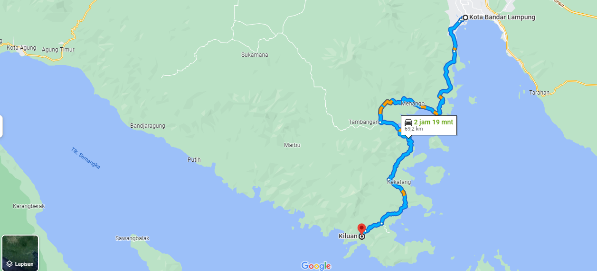

Informasi
Untuk menuju lokasi dari pusta kota Bandar Lampung membutuhkan waktu sekitar 3 hingga 4 jam perjalanan. Jika melihat peta, maka lokasi ini berjarak sekitar 80 km. Jika anda menggunakan peta atau GPS maka membutuhkan waktu sekitar 3 jam. Jika bertolak dari Bandar Lampung, maka anda dapat mengikuti jalan Morotai, selanjutnya ke jalan Laksamana RE Martadinata lalu masuk ke jalan raya Way Ratai. Setelah itu silakan ikuti jalan sampai masuk ke jalan Pematang Awi, terus jalan Dirt Road dan akan sampai ke Kiluan. Jalur lain dari Bandar Lampung adalah dapat mengambil jalan ke arah Padang Cermin sampai bertemu dengan persimpangan dimana ada pangkalan TNI Angkatan Laut, silakan pilih jalur kiri lalu ke arah Punduh Pidada. Apabila anda sudah memasuki Punduh Pidaha, maka akan melihat tulisan “Teluk Kiluan”. Silakan ikut petunjuk jalan sampai masuk ke Pasar Bawang, ada persimpangan maka belok ke kanan sampai bertemu dengan persimpangan terakhir. Lalu belok ke kiri dan anda akan menemukan gapura besar bertuliskan Selamat Datang di Teluk Kiluan.
Bagi anda yang ingin berkunjung ke teluk kiluan maka diharuskan membayar biaya tiket masuk sebesar Rp. 5.000. Lalu jika ingin menyeberang harus membayar taksi perahu dari Jukung ke pulau kiluan sebesar Rp. 15.000/orang. Sedangkan untuk parkir mobil sebesar Rp. 20.000.
Pantai Yang Bersih
melihat sekawanan lumba-lumba yang sedang berenang dan meloncat keluar dari air

Tempat yang Cocok Refreshing Bersama-Sama

Tempat Pengambilan Momen yang Indah dan Alami